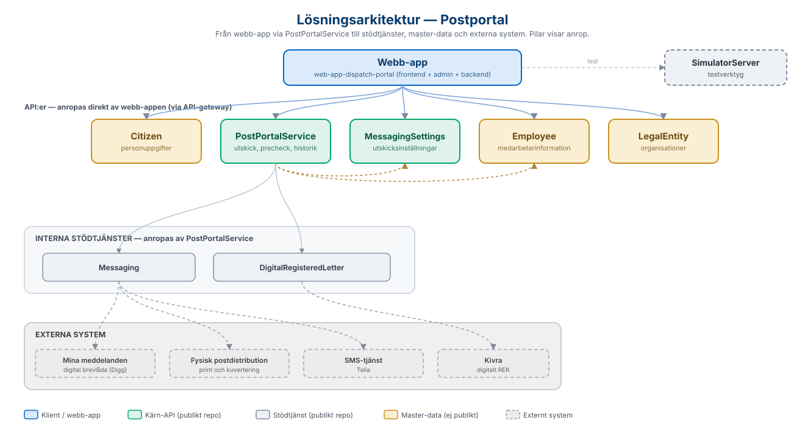

Här samlar vi länkar till de öppna källkodsrepon på GitHub som tillsammans bygger upp
helhetslösningen, samt de API:er som lösningen integrerar med.
Webb-appen
Webb-appen ligger i ett repo som består av tre delar: ett användargränssnitt byggt med
Next.js/React, ett administrationsgränssnitt (också Next.js) samt en backend i
Node.js/Express. Backend sköter inloggning via SAML mot kommunens identitetsleverantör (IdP)
och all kommunikation med de underliggande API:erna via kommunens API-gateway (WSO2), där
applikationen autentiserar sig med OAuth2 (client key/secret).
Lösningen är byggd för att kunna delas av flera kommuner i samma installation: varje
värdnamn/domän kopplas i en konfigurationsdatabas (Prisma) till sin kommuns IdP och
kommun-id, som sedan skickas med i alla API-anrop. Sessionshanteringen kan köras i minne,
på fil eller mot Redis beroende på driftmiljö (Redis rekommenderas för containerdrift i
t.ex. OpenShift).
Översikt över hur webb-appen, API:erna, de interna stödtjänsterna, master-data och
externa system hänger ihop. Pilarna visar anrop. Bilden är härledd från webb-appen,
API-listan och respektive API:s beskrivning av vad det i sin tur anropar.

Lösningsarkitektur — från webb-app via PostPortalService till stödtjänster, master-data och externa system.
API:er som lösningen integrerar med
Webb-appen anropar ett antal API:er via API-gatewayn. Navet är
PostPortalService, som tar emot utskicken och i sin tur anropar
stödtjänsterna Messaging (digital och fysisk post samt SMS) och
DigitalRegisteredLetter (digitalt REK via Kivra). De flesta API:er finns
som öppna repon på Sundsvalls kommuns GitHub. Tabellen nedan beskriver vad varje API gör
och länkar till källkoden. Vilka API-versioner webb-appen förväntar sig framgår av
README-filen i webb-appens repo.
API
Typ
Beskrivning
Källkod
PostPortalService
Kärn-API
Navet i lösningen – tar emot utskick av brev, digitalt REK och SMS (enstaka mottagare eller massutskick via CSV-fil), kontrollerar i förväg vilket leveranssätt varje mottagare kan ta emot (precheck) samt tillhandahåller historik, kvittenser och statistik.
Följande API:er hanterar kommun-specifik master-data och har därför inget publikt repo.
För att få dessa på plats krävs en utvecklingsinsats anpassad efter den egna kommunens
källsystem.
API
Beskrivning
Citizen
Medborgarinformation – slår upp mottagare via personnummer och hämtar namn och folkbokföringsadress.
Employee
Medarbetarinformation – används bland annat för uppgifter om den inloggade avsändaren.
LegalEntity
Information om organisationer och juridiska personer – slår upp mottagare via organisationsnummer.